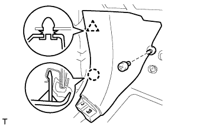
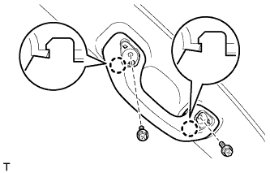
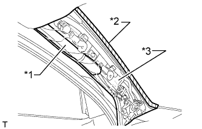
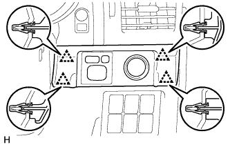
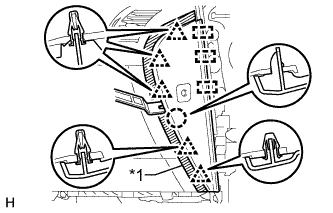
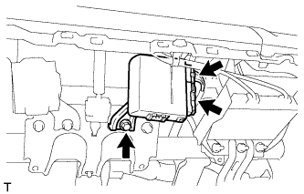
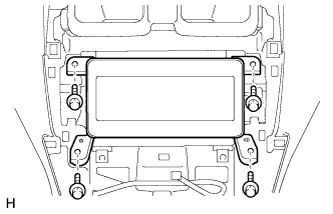
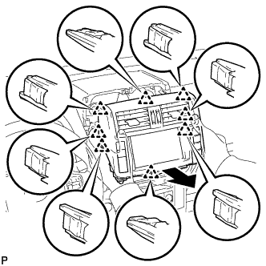
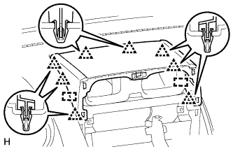

ЗАЩИТНАЯ НАКЛАДКА ПАНЕЛИ ПРИБОРОВ > СНЯТИЕ |
| 1. ТАБЛИЦА ИСПОЛЬЗУЕМЫХ БОЛТОВ, ВИНТОВ И ГАЕК |
| 2. ОТСОЕДИНИТЕ ПРОВОД ОТ ОТРИЦАТЕЛЬНОГО ВЫВОДА АККУМУЛЯТОРНОЙ БАТАРЕИ |
Отключите функцию AUTO TILT AWAY, изменив значение настраиваемого параметра (Нажмите здесь).
Включите зажигание (IG). С помощью переключателя наклона и телескопического изменения высоты полностью выдвиньте и опустите рулевую колонку.
Выключите зажигание и отсоедините провод от отрицательного (-) вывода аккумуляторной батареи.
| 3. СНИМИТЕ ПЕРЕКЛЮЧАТЕЛЬ СВЕТА ФАР В СБОРЕ |
Снимите переключатель света фар в сборе (Нажмите здесь).
| 4. СНИМИТЕ ЗАДНИЙ ВЕЩЕВОЙ ЯЩИК В ОБЛИЦОВКЕ ТУННЕЛЯ ПОЛА В СБОРЕ |
Для моделей с автоматической трансмиссией:
Снимите вещевой ящик в облицовке туннеля пола в сборе (Нажмите здесь).
Для моделей с механической трансмиссией:
Снимите вещевой ящик в облицовке туннеля пола в сборе (Нажмите здесь).
Для моделей с холодильной камерой:
Снимите вещевой ящик в облицовке туннеля пола в сборе (Нажмите здесь).
| 5. СНИМИТЕ ОПОРНУЮ НАКЛАДКУ ЛЕВОЙ ДВЕРИ В СБОРЕ |
 |
Наклейте защитную ленту вокруг опорной накладки двери.
С помощью отвертки освободите 4 фиксатора, 10 захватов и 2 направляющих и снимите опорную накладку двери.
| *1 | Защитная клейкая лента |
| 6. СНИМИТЕ ОПОРНУЮ НАКЛАДКУ ПРАВОЙ ДВЕРИ В СБОРЕ |
| 7. СНИМИТЕ БОКОВУЮ ОБЛИЦОВОЧНУЮ НАКЛАДКУ С ЛЕВОЙ СТОРОНЫ КОЖУХА |
|  |
Снимите фиксатор.
Освободите фиксатор и захват и снимите боковую облицовочную накладку кожуха.
| 8. СНИМИТЕ БОКОВУЮ ОБЛИЦОВОЧНУЮ НАКЛАДКУ С ПРАВОЙ СТОРОНЫ КОЖУХА |
| 9. СНИМИТЕ УПЛОТНИТЕЛЬ ОБШИВКИ ПРОЕМА ЛЕВОЙ ПЕРЕДНЕЙ ДВЕРИ |
 |
Снимите уплотнитель обшивки проема передней двери.
| 10. СНИМИТЕ УПЛОТНИТЕЛЬ ОБШИВКИ ПРОЕМА ПРАВОЙ ПЕРЕДНЕЙ ДВЕРИ |
| 11. СНИМИТЕ ЛЕВУЮ ПЕРЕДНЮЮ ЗАГЛУШКУ ВЕРХНЕГО ПОРУЧНЯ № 1 |
 |
С помощью отвертки освободите 2 захвата и снимите переднюю заглушку верхнего поручня № 1.
| *1 | Защитная клейкая лента |
| 12. СНИМИТЕ ПРАВУЮ ПЕРЕДНЮЮ ЗАГЛУШКУ ВЕРХНЕГО ПОРУЧНЯ № 1 |
| 13. СНИМИТЕ ВЕРХНИЙ ПОРУЧЕНЬ № 1 |
|  |
Отверните 2 болта.
Освободите 2 захвата и снимите верхний поручень № 1.
| 14. СНИМИТЕ ОБИВКУ ЛЕВОЙ СТОЙКИ ВЕТРОВОГО СТЕКЛА |
 |
Отсоедините 3 направляющие и снимите обивку стойки ветрового стекла.
|  |
Для моделей с подушкой безопасности занавесочного типа:
Защитите подушку безопасности занавесочного типа в сборе.
Полностью укройте подушку безопасности куском ткани или нейлона и закрепите края ткани клейкой лентой, как показано на рисунке.
| *1 | Подушка безопасности занавесочного типа в сборе |
| *2 | Клейкая лента |
| *3 | Защитное покрытие |
| 15. СНИМИТЕ ОБИВКУ ПРАВОЙ СТОЙКИ ВЕТРОВОГО СТЕКЛА |
| 16. СНИМИТЕ ЛЕВУЮ БОКОВУЮ ПАНЕЛЬ ПРИБОРОВ |
 |
Наклейте защитную ленту вокруг боковой панели приборов.
| *1 | Защитная клейкая лента |
С помощью съемника молдингов отцепите 5 фиксаторов, захват и 3 направляющих и снимите боковую панель приборов.
| 17. СНИМИТЕ ДЕКОРАТИВНЫЙ ЭЛЕМЕНТ ОБЛИЦОВКИ ПАНЕЛИ УПРАВЛЕНИЯ (для моделей с левосторонним рулевым управлением) |
 |
Наложите защитную ленту вокруг декоративного элемента отделочной накладки панели приборов.
| *1 | Защитная клейкая лента |
С помощью съемника молдингов освободите 3 фиксатора и снимите декоративный элемент отделочной накладки панели приборов.
| 18. СНИМИТЕ ОБЛИЦОВКУ ОТДЕЛОЧНОЙ НАКЛАДКИ ПАНЕЛИ ПРИБОРОВ (для моделей с правосторонним рулевым управлением) |
|  |
Освободите 4 фиксатора.
Отсоедините все разъемы и снимите облицовку отделочной накладки панели приборов.
| 19. СНИМИТЕ НИЖНЮЮ ОТДЕЛОЧНУЮ НАКЛАДКУ ПАНЕЛИ ПРИБОРОВ В СБОРЕ |
 |
Освободите 4 фиксатора.
Отсоедините все разъемы и снимите отделочную накладку панели приборов.
| 20. СНИМИТЕ НИЖНЮЮ ОТДЕЛОЧНУЮ НАКЛАДКУ ПАНЕЛИ ПРИБОРОВ В СБОРЕ |
 |
С помощью отвертки освободите 2 захвата и откройте крышку.
| *1 | Защитная клейкая лента |
 |
Для моделей без подушки безопасности для защиты коленей:
Выверните 2 болта <C>.
Освободите 7 фиксаторов.
Отсоедините все разъемы и все кабели и снимите нижнюю отделочную накладку панели приборов.
 |
Для моделей с подушкой безопасности для защиты коленей:
Выверните 2 болта <C>.
Освободите 14 фиксаторов.
Отсоедините все разъемы и все кабели и снимите нижнюю отделочную накладку панели приборов.
| 21. СНИМИТЕ ПОДУШКУ БЕЗОПАСНОСТИ № 1 ДЛЯ ЗАЩИТЫ НОГ В СБОРЕ |
 |
Выверните 4 болта и снимите подушку безопасности в сборе.
Отсоедините разъем.
| 22. СНИМИТЕ ОБЛИЦОВКУ ПАНЕЛИ УПРАВЛЕНИЯ В СБОРЕ |
 |
Освободите 4 захвата, 2 фиксатора и 2 направляющих и снимите отделочную накладку панели приборов.
| 23. СНИМИТЕ ЩИТОК ПРИБОРОВ В СБОРЕ |
 |
Выверните 4 винта.
Отсоедините разъем и снимите щиток приборов.
| 24. СНИМИТЕ ПРАВУЮ БОКОВУЮ ПАНЕЛЬ ПРИБОРОВ |
|  |
Наклейте защитную ленту вокруг боковой панели приборов.
| *1 | Защитная клейкая лента |
С помощью съемника молдингов расцепите 5 фиксаторов, захват и 3 направляющих.
Отсоедините разъем и снимите боковую панель приборов.
| 25. СНИМИТЕ ДЕКОРАТИВНЫЙ ЭЛЕМЕНТ ПАНЕЛИ ПРИБОРОВ |
 |
Наклейте защитную ленту вокруг декоративного элемента панели приборов.
| *1 | Защитная клейкая лента |
С помощью съемника молдингов освободите 5 фиксаторов и снимите декоративный элемент панели приборов.
| 26. СНИМИТЕ ДВЕРЦУ ПЕРЧАТОЧНОГО ЯЩИКА В СБОРЕ |
 |
Выверните 2 болта <C> и 2 винта <A> или <B>.
| *1 | Болт |
| *2 | Винт |
Отцепите 5 фиксаторов и захват.
Отсоедините все разъемы и снимите дверцу перчаточного ящика.
| 27. СНИМИТЕ ЭБУ ПЕРЕКЛЮЧАТЕЛЯ ПОМОЩИ ПРИ ДВИЖЕНИИ |
 |
Отсоедините разъем.
Выверните болт и снимите ЭБУ переключателя помощи при движении.
| 28. СНИМИТЕ ЭБУ ПОЛНОГО ПРИВОДА |
|  |
Отсоедините 2 разъема.
Выверните болт и снимите ЭБУ полного привода.
| 29. СНИМИТЕ ЭБУ МУЛЬТИМЕДИЙНОГО ИНТЕРФЕЙСА |
Отсоедините 3 разъема.
Отверните 2 гайки и снимите ЭБУ мультимедийного интерфейса.
| 30. СНИМИТЕ ЦЕНТРАЛЬНУЮ ОТДЕЛОЧНУЮ НАКЛАДКУ ПАНЕЛИ ПРИБОРОВ В СБОРЕ (для моделей без дисплея) |
 |
Освободите 10 фиксаторов.
Отсоедините разъем и снимите центральную отделочную накладку панели приборов.
| 31. СНИМИТЕ КРЫШКУ ОТВЕРСТИЯ РАДИОПРИЕМНИКА (для моделей без аудиосистемы) |
|  |
Выверните 4 болта и снимите крышку отверстия радиоприемника.
| 32. СНИМИТЕ ДИСПЛЕЙ МОДУЛЯ СИСТЕМЫ НАВИГАЦИИ И ИНДИКАЦИИ (для моделей с дисплеем, с системой навигации) |
 |
Выверните 4 болта.
|  |
Потяните дисплей модуля системы навигации и индикации, чтобы освободить 8 фиксаторов с обратной стороны дисплея.
Отсоедините разъемы и снимите дисплей модуля системы навигации и индикации.
| 33. СНИМИТЕ ВСПОМОГАТЕЛЬНЫЙ ИНДИКАТОР В СБОРЕ (для моделей с дисплеем, без системы навигации) |
 |
Выверните 2 болта.
 |
Вытяните вспомогательный индикатор, чтобы открепить 10 фиксаторов с обратной стороны вспомогательного индикатора.
Отсоедините разъемы и снимите вспомогательный индикатор.
| 34. СНИМИТЕ НИЖНЮЮ ЦЕНТРАЛЬНУЮ ОТДЕЛОЧНУЮ НАКЛАДКУ ПАНЕЛИ УПРАВЛЕНИЯ В СБОРЕ (для моделей без аудиосистемы) |
Выверните 2 болта <Е>.
Освободите 3 фиксатора и направляющую и снимите нижнюю центральную отделочную накладку панели приборов.
| 35. СНИМИТЕ РАДИОПРИЕМНИК В СБОРЕ (для моделей с аудиосистемой) |
Верхняя сторона:
Снимите радиоприемник в сборе (Нажмите здесь).
Нижняя сторона:
Снимите радиоприемник в сборе (Нажмите здесь).
| 36. СНИМИТЕ ВЕРХНЮЮ ОТДЕЛОЧНУЮ НАКЛАДКУ ПАНЕЛИ ПРИБОРОВ |
|  |
Освободите 8 фиксаторов и 2 направляющих и снимите верхнюю отделочную накладку панели приборов.
| 37. СНИМИТЕ ПЕРЕДНИЙ ДИНАМИК № 4 В СБОРЕ |
Выверните 2 болта.
Снимите передний динамик № 4 и отсоедините разъем динамика.
| 38. СНИМИТЕ ДЕФЛЕКТОР № 1 ПАНЕЛИ ПРИБОРОВ В СБОРЕ |
Освободите 4 фиксатора и снимите воздуховод с дефлектором № 1 панели приборов.
| 39. СНИМИТЕ ДЕФЛЕКТОР № 2 ПАНЕЛИ ПРИБОРОВ В СБОРЕ |
| 40. СНИМИТЕ ПАНЕЛЬ ДИНАМИКА ПАНЕЛИ ПРИБОРОВ № 1 В СБОРЕ |
Наклейте защитную ленту вокруг панели динамика панели приборов № 1.
С помощью отвертки расцепите 2 фиксатора, зажим и 2 направляющих и снимите панель динамика панели приборов № 1.
| *1 | Защитная клейкая лента |
| 41. СНИМИТЕ ПАНЕЛЬ ДИНАМИКА ПАНЕЛИ ПРИБОРОВ № 2 В СБОРЕ |
| 42. СНИМИТЕ ПЕРЕДНИЙ ДИНАМИК № 2 В СБОРЕ |
Отсоедините разъем.
Освободите фиксатор и захват и снимите передний динамик № 3.
| 43. СНИМИТЕ ПЕРЕДНИЙ ДИНАМИК № 3 В СБОРЕ |
Отсоедините разъем.
Освободите фиксатор и захват и снимите передний динамик № 3.
| 44. СНИМИТЕ ЛЕВОЕ ПЕРЕДНЕЕ СИДЕНЬЕ В СБОРЕ |
Для сиденья с ручным приводом:
Снимите переднее сиденье в сборе (Нажмите здесь).
Для сидений с электроприводом:
Снимите переднее сиденье в сборе (Нажмите здесь).
| 45. СНИМИТЕ ПРАВОЕ ПЕРЕДНЕЕ СИДЕНЬЕ В СБОРЕ |
Для сиденья с ручным приводом:
Для сидений с электроприводом:
Для сидений с функцией облегчения посадки "Walk In":
Снимите переднее сиденье в сборе (Нажмите здесь).
| 46. СНИМИТЕ ПЕРЕДНЮЮ НАПОЛЬНУЮ ОПОРУ ДЛЯ НОГИ |
Для моделей с левосторонним рулевым управлением:
Снимите переднюю напольную опору для ноги (Нажмите здесь).
Для моделей с правосторонним рулевым управлением:
Снимите переднюю напольную опору для ноги (Нажмите здесь).
| 47. СНИМИТЕ ЗАЩИТНУЮ НАКЛАДКУ ПАНЕЛИ ПРИБОРОВ В СБОРЕ |
Для моделей с левосторонним рулевым управлением:
Частично снимите напольный коврик.
Выверните 6 болтов <E> и отверните гайку <F>.
Выверните 2 болта <G> подушки безопасности пассажира.
Выверните 4 болта, отверните 2 гайки и снимите 2 кронштейна.
Отсоедините разъемы и расцепите зажимы и захваты.
Расцепите 2 направляющие и снимите защитную накладку панели приборов.

| *1 | Болт <E> | *2 | Гайка <F> |
| *3 | Болт <G> | *4 | Направляющая |
| *5 | Кронштейн | - | - |
Для моделей с правосторонним рулевым управлением:
Частично снимите напольный коврик.
Выверните 6 болтов <E> и отверните гайку <F>.
Выверните 2 болта <G> подушки безопасности пассажира.
Выверните 4 болта, отверните 2 гайки и снимите 2 кронштейна.
Отсоедините разъемы и расцепите зажимы и захваты.
Расцепите 2 направляющие и снимите защитную накладку панели приборов.
| *1 | Болт <E> | *2 | Гайка <F> |
| *3 | Болт <G> | *4 | Направляющая |
| *5 | Кронштейн | - | - |